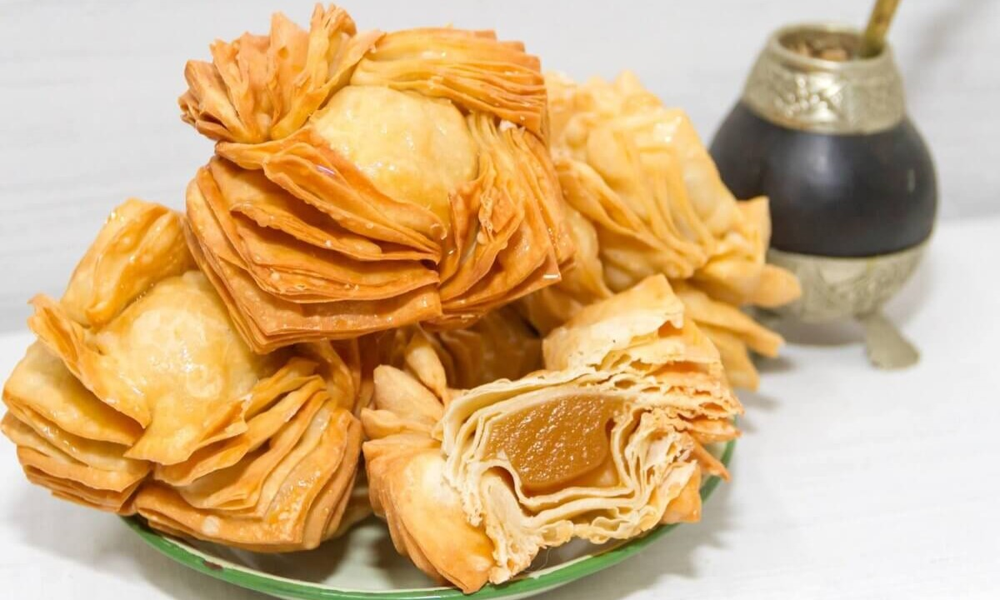

Pastelitos

Los pastelitos argentinos son pequeñas delicias fritas que capturan el corazón de aquellos que aman los sabores dulces. Estas empanadillas rellenas están hechas con una masa crujiente y dorada que encierra un relleno tradicional de dulce de membrillo o batata. Una vez fritas, se espolvorean con azúcar, lo que aporta un equilibrio perfecto entre la textura crujiente y el dulce relleno.
Ingredientes
Rinde aproximadamente 24 pastelitos Para la masa:- - 500 gramos de harina 0000
- - 250 centímetros cúbicos de agua
- - 100 gramos de manteca
- - 1 pizca de sal
- - 1/2 cucharada de limón
- - 50 gramos de manteca o margarina
- - Amidón de maíz
- - 300 gramos de dulce de batata o membrillo
Preparación:
- Realizar una corona con la harina, la sal y en el centro colocar azúcar, manteca y agua de a poco.
- Amasar hasta lograr una masa lisa, dejar reposar tapada por una hora y estirar en un rectángulo.
- Untar con la margarina, espolvorear con el almidón y repartir por toda la masa.
- Llevar un extremo al centro y luego tapar con el otro extremo (vuelta simple).
- Dejar descansar 1 hora y volver a repetir la acción anterior 2 veces más, siempre dejando el cierre para el costado.
- De esa manera son las 3 vueltas simples necesarias.
- Estirar la masa (3 mm) y cortar cuadrados de 8 x 8.
- En el centro colocar el dulce de membrillo o batata, tapar con otro cuadrado de masa y cerrar los pasteles uniendo los bordes.
- Freír los pasteles en aceite a 130° C hasta que abra el hojaldre.
- Retirar y freír en aceite a 170° C hasta dorar.